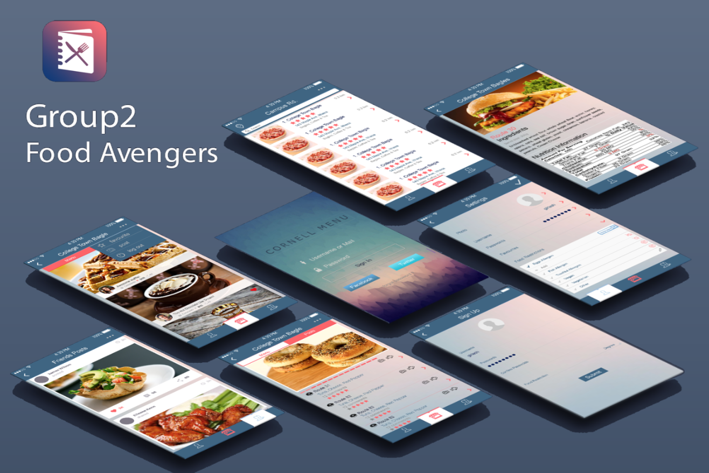
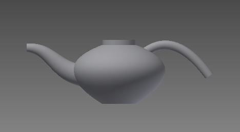
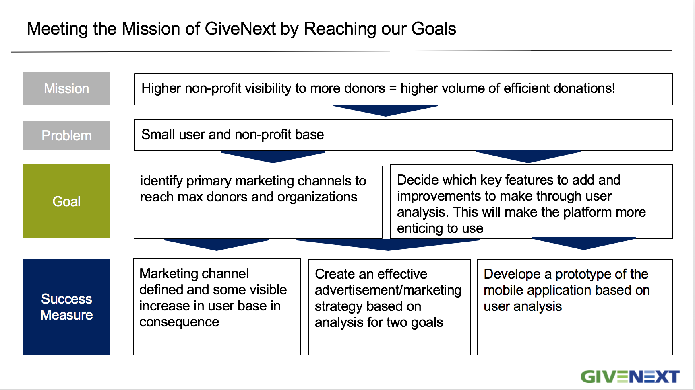
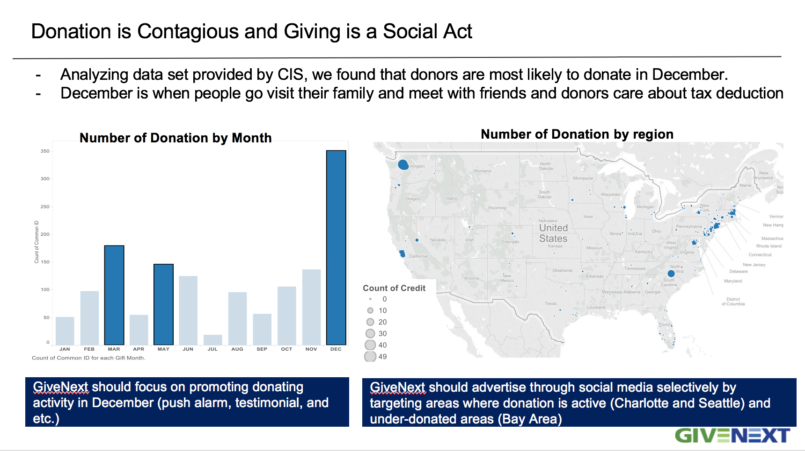
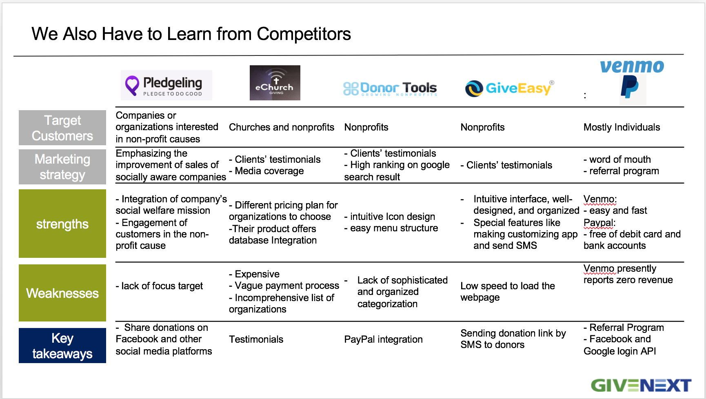
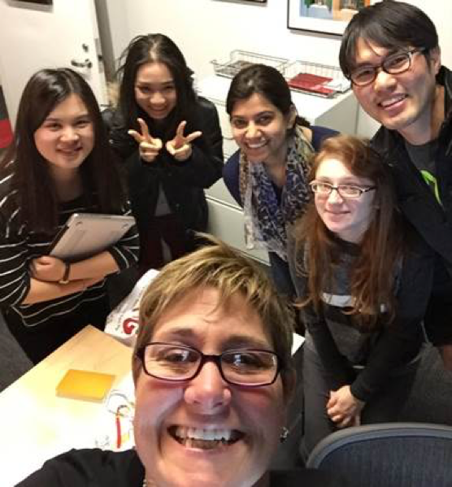

With a background of Management, Economics, Computer Science and Data Science, I have a diverse knowledge that can be applied to many fields. I am especially interested in web design and development, UX/UI design and research, iOS development, and data analysis and visualization.
Defined the aim of this project is to develop the video hosting and file system component for the MERID project, which is studying creativity in orchestras, and to integrate this component with the rest of the MERID system.
Learned how hardware and software design influence the interaction between people and computers
My role: UI/UX Designer
Skills utilized: user interviews and analysis, UI design (PhotoShop), low quality prototypes and high quality prototypes (Axure)

Problems
When arriving on a college campus for the first time, new students are forced to rapidly adapt to their new social and work environment over the course of their study. This task is daunting in its own right, but is made so much more difficult when the student’s diet is limited by a GI disease, severe allergy, or other dietary restriction. Students with these conditions may often put their health at risk when they don’t have the time or energy to ensure they are maintaining their diet, and may also feel socially limited when they are unable to eat at the same places as their friends. To help these students, we have developed Cornell Menu: a mobile application designed to provide streamlined and filtered menu information about on-campus meal halls based on the user’s dietary restriction that will also serve to connect newer students with older students with similar conditions to create an information sharing network.
Solutions
To help Cornell students with food restrictions, especially new students, we developed Cornell MenU: a mobile application designed to provide streamlined and filtered menu information about on-campus meal halls based on the user’s dietary restriction that will also serve to connect newer students with older students with similar conditions to create an information sharing network.
Paper Prototypes
Our application is a mobile application which obviously meets the first goal that users need; an App format which is usable and convenient. We first used paper prototypes to prove concepts and got quickfeed back.
(1) “Application of a Novel Collaboration Engineering Method for Learning Design: A Case Study”, SSCI journal: British Journal of Educational Technology, 2015 ( See details ||View pdf )
(2) “Can We Solve Low Participation, Distraction, and Inefficiency? A Case Study of Distributed Collaborative Learning in Industries”, 48th Hawaii International Conference on System Sciences (#2 in information system), 2015 ( See details ||View pdf )
(3) “Collaboration Information System Adoption in Hospitality”, 18th Pacific Asia Conference on Information Systems, 2014( See details ||View pdf )
(4) “Easy Collaboration Process Support System Design for Student Collaborative Group Work”, 47th Hawaii International Conference on System Sciences, 2014( See details ||View pdf )
(5) “An Online Collaboration Process Design for the Student Organization”, Journal of Theoretical and Applied Information Technology, 2012 ( See details ||View pdf )
Skills utilized: microcontrollers (Photon), CAD program (AutoDesk Inventor), building prototypes with a laser cutter and 3D printer
Learned modern rapid prototyping techniques such as laser cutting, 3D printing and microcontroller programming (such as the Arduino system). Using these tools, small multidisciplinary groups conduct the hardware project of their choice exploring topics as varied as: Universal Access, tangible interfaces, toys, personal or medical assistants and new musical instruments
My role: Programmer
Design 1: Interactive Design
The small moving car is a design for a fun game. In the game, player can set a target distance by the potentiometer. The player then can use the button to control the mini car to the target distance. There are two different actions to use the button. One is the quick and short click (just like what we made a dot in the Morse code), and the other is the longer click (just like what we made a dash in the Morse code). The quick and short click can switch the mini car run or stop. The longer click can switch the direction of the car (move forward or move backward). When the mini car is far away from the target distance, the 3-color LED will turn on the green light. When the car is at the target place, the blue light will turn on. But if the the car is too close to the target object, the red light will turn on.
Interactive Design: Demo
Design 2: Interactive Design
My design project 2 is a box made by 2D laser cutter. The box can be triggered to open by the correct input code. The default code is “longer click, shorter click and longger click”. You need to use the button to make different click. It also has a speaker to tell you if your input code is correct or not. When the Photon start to work, the speaker will play music. Then you can start to input opening code. If you click in wrong actions, a speaker will play error sound. If you click right code, the speaker will play music and the box will open. After seconds, the box will close automatically so you can try to input the code again. The status of the input code can also be seen in console if you connect it.
2D printer Design: Demo
Class assignment: Steam Engine with Encoder
An animated steam engine. Each animation will last a full cycle. After about 5s the motor should start again in the opposite direction.
Steam Engine Demo
Class assignment: Stepper and Sonar
The system can use sonar to print pictures
Class assignment: Use morse code to control fan
The system can print the setting on the terminal and set the speed of the fan according to the setting (0 -> Off; ... 9 -> Full speed)
Class assignment: Morse Code
If you type numbers on the terminal, the LED will be blinking the correct Morse code sequence
Morse Code Demo
CAD Drawing

Date: Jan 2016 - Present
iOS Design and Development
Cornell Feline Health Project
Developed a mobile application for Cornell Feline Health Center to improve the health and well-being of cats
My role:UI Designer and iOS Developer
Skills utilized: programming on the iOS platform, UI design, and UX design
The Cornell Feline Health Center is dedicated to improving the health and well-being of cats everywhere by: (1) educating veterinary professionals, cat owners, breeders, and conservationists about feline health by providing timely medical information and by promoting public understanding and awareness of feline issues; (2) finding ways of preventing and curing diseases of cats by conducting and sponsoring breakthrough feline health studies; and (3) aiding veterinarians when new or unknown feline diseases occur.
Prototypes version 1
FitCat Weight Loss is a four-step app with these steps: (1) plan the weight loss program, (2) help the owner shop for food to meet the plan, (3) record what the cat eats, and (4) track actual vs. planned weight loss. The goal of this semester’s project is to implement the planning step only. The planning step involves: (1) teaching the owner how to judge their cat’s body condition (a visual/tactile measure of the cat’s degree of obesity), (2) getting the actual body condition from the owner, (3) using the body condition, the cat’s actual weight, and the recommended safe weight loss rate to project the goal weight, the time to reach the goal, and the maximum calories and grams of fat per day for the cat to achieve the goal in the given time.
Prototypes demo
Prototypes version 2
In the iterative prototpyes, we changed the UI design to make it consistent with the Cornell Feline Center brand.
Prototypes demo
Sketch 3 pictures
iOS Demo-Real App
Date: Jan 2016 - Present
Client: Dr. Bruce Kornreich, College of Veterinary Medicine; Paul Cashman, Founder at History in Motion
Team members: Yuanyuan Li (Maggie), Akshay Tata, Shunchang Bai
Business Consulting Project
Donating StartUp GiveNext
Designed a mobile app and marketing strategies for startup GiveNext to attract more donors and organizations
My role: UI/UX Designer
Skills utilized: marketing and branding analysis, marketing research and competitive analysis, UI and UX design, design thinking approach to strategy, marketing and product development
About the client
GiveNext is eTrade™ for Giving. GiveNext is a mobile and online platform where donors can transact and manage all of their charitable giving in partnership with the causes they care about. Once the portfolio of charities is compiled to a donor’s account and the donor’s payment information is entered once, GiveNext becomes the easiest way to give. Donor’s have instant access to their giving tax receipt and a mobile history of their charitable support. See demo.
About the project
GiveNext has not nailed the marketing channel for the acquisition of customers (donors and nonprofits) and the scaling of the business. Students will be asked to identify marketing alternatives, test feasibility, and determine the best channel to scale the business. In addition to identifying the key initial innovators (users) and early adopters, students will be asked to mold the brand identity, product design (UX) and create the marketing message. Because donors use this platform for all their charitable giving, GiveNext has the potential for providing to nonprofits (for the first time) collective philanthropic data to nonprofits that can inform their communications, events, and fundraising strategies. This data – and its appropriate use and form – is a distinct competitive advantage over traditional single transaction online payment processors.
Activities
Research the charitable giving market and understand the donor and nonprofit behaviors and decision-making
Conduct a competitive analysis of the online giving (payment processing) market
Identify key product benefits for target markets, and recommend key product features and enhancements to next version of product
Create a marketing plan and branding strategy that lead to introduction of GiveNext to the charitable giving and nonprofit industry



Our team

Prototypes Demo v1
Date: Jan 2016 - present
Client: Daniel J Mansoor, Founder & CEO of GiveNext.com
Working with data in the context of modern web applications. These include data representation with relational and non-relational databases, data mining to find patterns and make predictions, and graphical presentation for visualization.
My role: Front-end developer, Data scientist
Skills utilized: data mining and visualization, d3.js, javascript
Project 1: Analysis of Hospital Costs for Top Diagnoses in the United States from 2011 to 2013
Family and Children Services of Ithaca has witnessed there is a lack of basic resources for low income individuals and families and people in poverty to feed themselves or their families on a daily basis. Many individuals sit or stand with a sign requesting money for food, for housing, or basic survival. Community members sometimes respond with money and / or food. The act of holding a sign can degrade the self- esteem of individuals as well as it is not welcome site to members of the community. The organization would like to see an alternative way for individuals to donate and receive the funds they need to eat.
Solution
Pro Bonobos is a program designed to help raise awareness about food insecurity. It would help low income individuals and families in poverty to feed themselves on a daily basis
Presented a financial techonology solution in 24 hours and proposed a risk evaluation platform for Indian banks who could lend money to farmers but without data support
My role: Business Analysist
Skills utilized: presentation, communication, and agile innovation
I studied the finance problems in India and proposed sollutions and pitched to mentors and other groups' members to polish ideas. It's important to team with students from different background and learned agile innovation, problem analysis and conflict resollution.


{kind=link}